İSTANBUL · 41°00′N
Bir şehrin
gece çizgisi.
Boğaz, kıyı ve eski semtlerden esinlenen özgün bir vektör çalışma. Bu görsel ölçeksizdir; canlı harita, hava tahmini, deprem verisi veya navigasyon sağlamaz.

Bu sayfa tamamen yerel HTML ve CSS ile çalışır. Kişisel not veya konum verisi toplamaz.